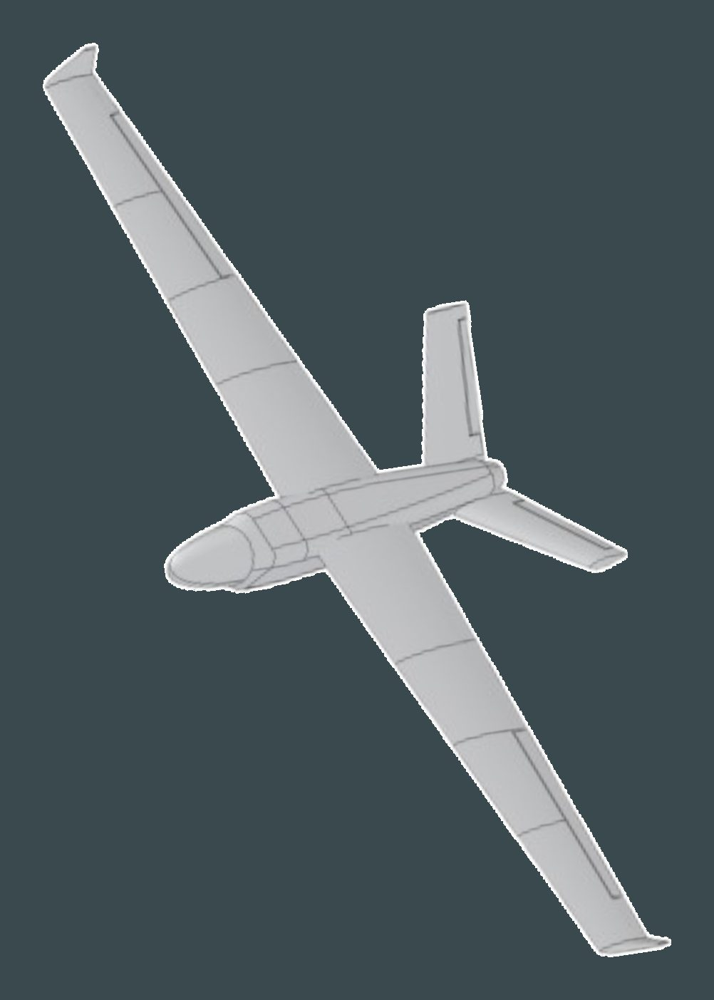
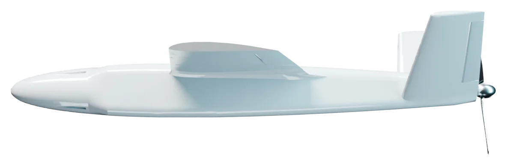
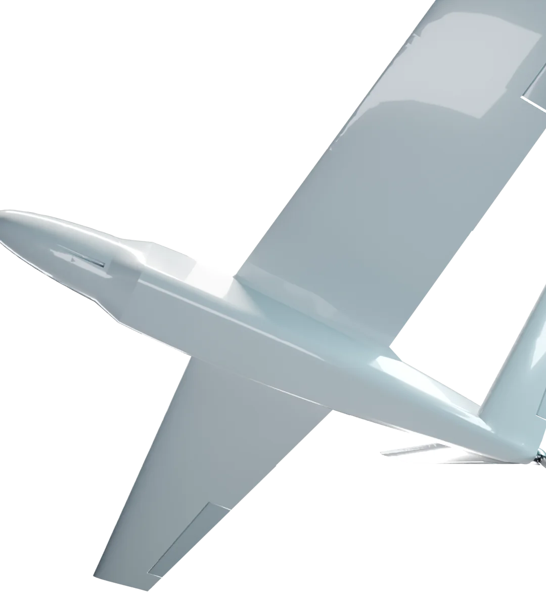
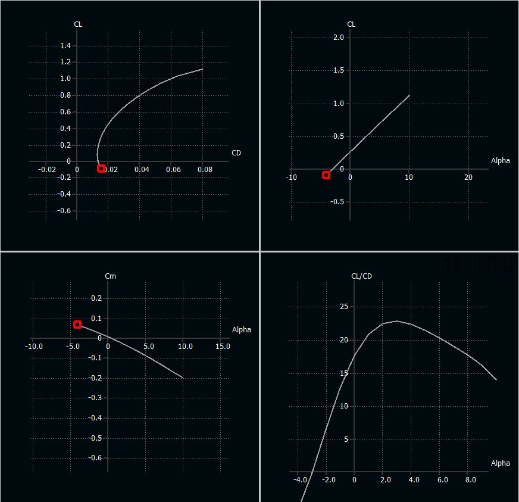
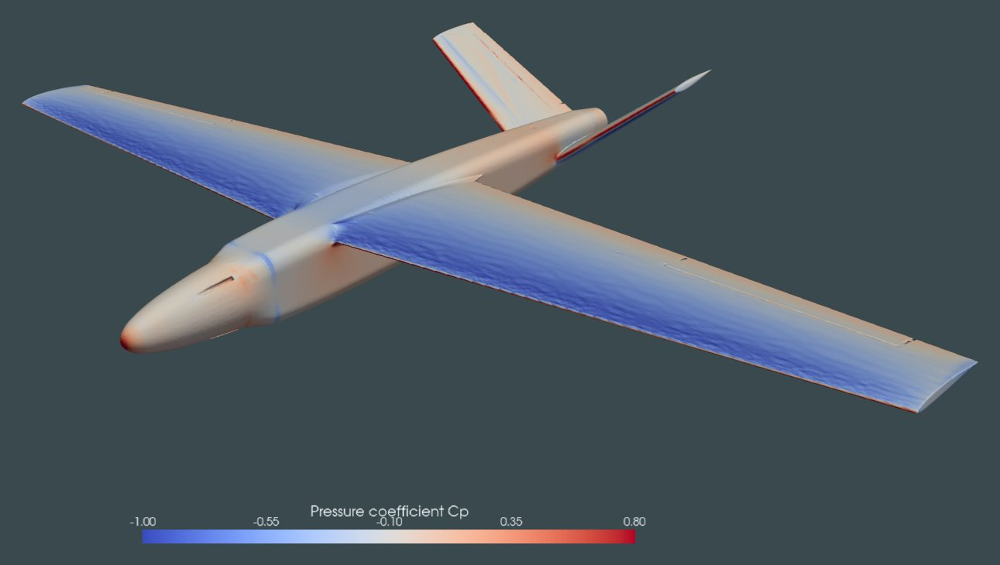
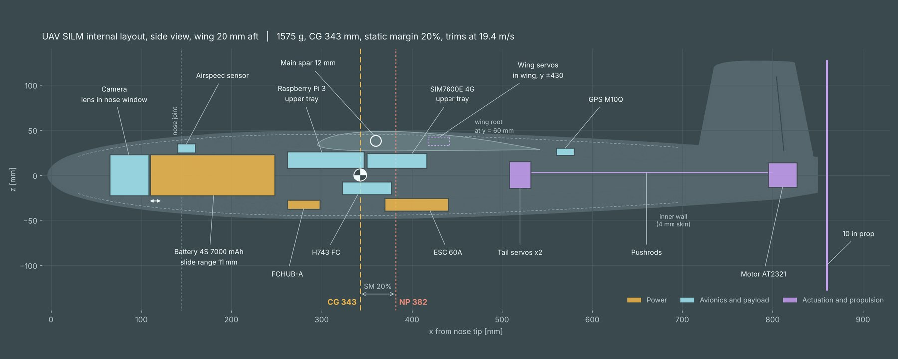

Why Buteo





Studio renders of the V6 CAD. The propeller is a stand-in.
What the design is calculated to do
Every number here comes from our analysis and hand calculation on the current geometry, not from flight tests. Treat them as design targets.
- Endurance target: about 100 min
- Cruise L/D: about 22 at 3° (XFLR5, wing and tail), about 14 for the full aircraft in CFD
- Stall speed: about 9.9 m/s level
- Static margin: about 20% of MAC with the wing moved aft
- Negative Cm slope, so statically stable
- Trims at about 19 m/s with the ruddervators neutral
- ArduPilot autopilot
- Mission route planned on a map, flown as GPS waypoints
- 4G LTE and WireGuard failsafe concept
We sized the motor against the 1.7 kg all-up mass with margin for material or battery changes. Static thrust will be measured on our own test rig before flight (see Build). The motor sits inside the tail cone on its long shaft, so the cone needs cooling vents.
An ArduPilot autopilot with GPS, compass and digital airspeed sensing flies the aircraft autonomously along waypoints. We plan each mission on a map in our own planner on a laptop and upload it over USB before launch; the aircraft then launches from a hand throw, flies the whole route and lands itself.
There is no radio-control link: nobody flies the aircraft by hand, so takeoff, the mission, the landing and every failsafe are automatic. A 4G LTE module paired with an encrypted WireGuard link on a Raspberry Pi Zero 2W is planned as an optional channel for watching telemetry during a flight.
The nose cone screws on and off, so the same airframe can carry an ISR sensor payload or be reconfigured without redesigning the fuselage. Swapping the wing set for a cheaper, higher aspect-ratio pair trades cruise performance for lower-cost, lower-tempo missions. Because modules attach at fixed stations, moving the centre of gravity is mostly a matter of choosing which modules are fitted.
Cheaper, higher aspect-ratio wings can be fitted for lower-paced missions, and the screw-on nose cone carries the payload.



Neither aircraft has flown yet. Figures are design estimates from CFD and calculation, not flight-test data.